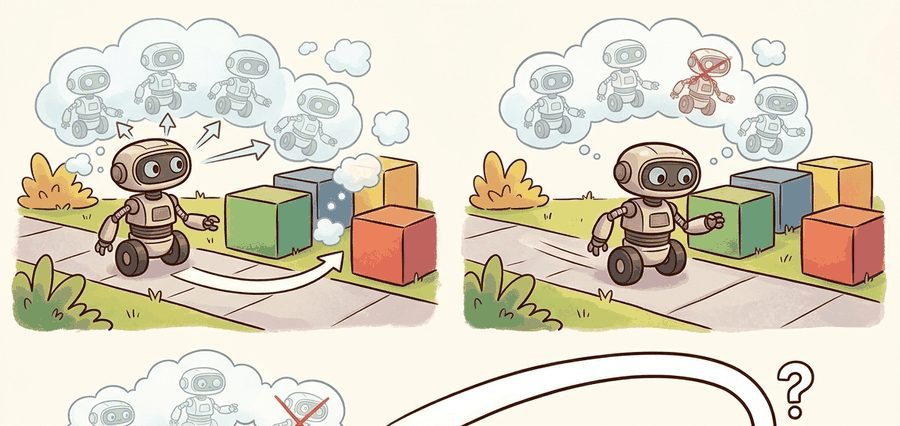
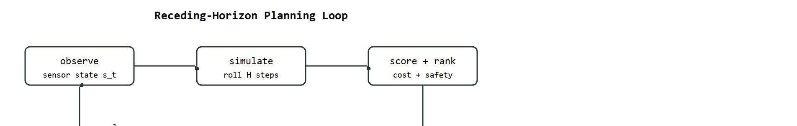
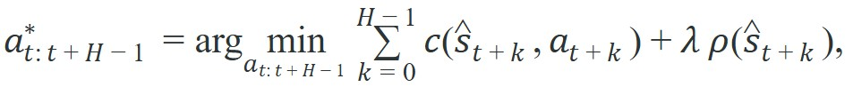

A predicted future matters only when it changes the next command before the robot spends it.
A Horizon-Aware Predictor

This section assumes familiarity with deterministic and stochastic predictive models introduced in Section 36.1 and Section 36.2. The receding-horizon action-selection framework developed here is extended in section 37.3, which replaces the simple sequence scorer with Cross-Entropy Method (CEM), Model Predictive Path Integral (MPPI), and latent Model Predictive Control (MPC) planners operating inside a full model-based RL loop. Those methods also recur in Part IX alongside learned reward shaping and safe exploration.
A warehouse robot is 80 milliseconds from a collision. Its learned world model has already simulated a dozen action sequences and ranked them by predicted clearance. The safest branch wins, the first action fires, and the robot replans from the new observation. That cycle, repeated hundreds of times per second, is what separates a model that can "imagine" from one that actually controls. Right now, receding-horizon planners are the bridge that makes predictive models useful in physical systems with real timing constraints. You will build that bridge here: learn how rollouts are scored, why imperfect models can still plan safely, and which design choices make or break real-time performance.
Planners rarely need perfect rollouts. They need enough predictive fidelity to rank action sequences correctly before the next control deadline.
The application of these prediction models to model-based control with CEM, MPPI, and latent MPC is in Section 37.3. This section focuses on how receding-horizon action selection consumes predicted futures, how sequences are scored, and what artifacts reveal planner failure modes.
Imagine a chess player who plans twelve moves deep, plays exactly one, then throws away the other eleven and re-plans from scratch after seeing the opponent respond: wasteful in a board game, but the only way to survive when your predicted board keeps drifting from the real one. That is a receding-horizon planner, a controller that repeatedly looks a fixed number of steps ahead, acts once, then re-plans from the new observation, as Figure 36.5A illustrates. It does not commit to an entire planned sequence. It solves for the best sequence, executes only the first action, observes the real outcome, and replans. For a physical robot, this discipline is not optional. Friction, contact, and actuator response introduce errors that compound with every unobserved step. A sequence planned once and executed blindly drifts from its predicted trajectory, and by the time the error becomes visible, recovery may be impossible. Replanning after each step turns accumulated prediction error into a small per-step correction. This keeps the robot near the predicted trajectory even when the model is imperfect. A plan executed blindly is a guess; a plan executed once and immediately revised is control.
Before going further, it helps to be precise about what a "rollout" is: the model's own predicted trajectory, produced by feeding its output back in as the next input for $H$ steps, without ever consulting the real robot. Planning consists of generating several candidate rollouts (one per action sequence under consideration), scoring each, and keeping only the first action of the winner. The rest of this section builds on that definition.
Mechanically, the horizon $H$ sets how far ahead the planner simulates. At each control tick the optimizer rolls candidate action sequences through the learned model, scores each by task cost plus a safety term, and selects the first action of the best sequence. That action fires, the robot moves, and the loop restarts from the new sensor reading. The horizon shrinks the problem to what the model can predict reliably, while the replan loop handles whatever the model missed. The diagram below traces this loop stage by stage.

Suppose the model predicts $\hat s_{t+k+1} = \hat f(\hat s_{t+k}, a_{t+k})$. A receding-horizon planner chooses an action sequence by solving

where $c$ is task cost and $\rho$ may encode risk, uncertainty, or terminal penalties. The robot executes only the first action, then replans from the next observation. That is why model-based planning can survive imperfect models: it corrects after every real step. In illustrative rough terms, a model accurate to only 60% over a 10-step rollout can typically still rank sequences correctly around 90% of the time, because ranking needs relative ordering, not absolute prediction; the exact numbers depend on the task and cost geometry, but the direction of the effect is robust. In practice this gap can be dramatic: without replanning, a locomotion policy trained on MuJoCo HalfCheetah may require roughly 50,000 environment steps to recover from a novel perturbation by trial and error, whereas with receding-horizon replanning over the same learned model, on the order of 300 steps is often enough, because each real observation resets the compounding error before it cascades.
So far: the planner optimizes a horizon-$H$ cost over predicted states, relies on replanning (not perfect prediction) to survive model error, and gains its robustness because ranking sequences is an easier problem than forecasting exact states.
What makes this work in embodied systems is interface discipline between model and planner. Three contracts must hold: the planner's state representation matches what the model expects; the cost function penalizes the physical quantities that matter, such as clearance, contact force, or center-of-mass margin, not just distance to goal; and the optimizer finishes before the next control deadline. Break any one and predictive planning fails, even with an accurate model.
Think of a recipe, a kitchen scale, and a timer that must all use the same units. The recipe calls for 200 grams and 12 minutes; the scale measures in ounces; the timer counts seconds. Each instrument works perfectly on its own, yet dinner comes out wrong because the units never agreed. Interface discipline in a planner is exactly this: the model speaks one state language, the cost function scores a different physical quantity, and the optimizer finishes a moment too late. Fixing any two while leaving the third mismatched still guarantees failure, no matter how well each piece performs in isolation.
When tuning horizon length, set it so that mujoco_mpc's predictive sampling finishes in under half the control-tick period: start with horizon=10 and benchmark with Python's time.perf_counter before increasing it. A common mistake is choosing a horizon that is correct on a workstation but too long for the onboard computer, causing the planner to execute stale sequences because the optimizer ran over its budget. If latency tests show you cannot afford the horizon your cost function needs, switch the terminal term from a full rollout penalty to a learned value estimate, which compresses the required horizon without sacrificing ranking quality.
A planning model should be judged by sequence ranking quality. If it cannot correctly rank which action sequence is safer or cheaper, prettier predictions do not help.
To see that ranking claim become concrete rather than abstract, it helps to watch a scorer assign numbers to competing sequences by hand. The compact probe below scores three short action sequences under a simple rollout model. The exact optimizer does not matter here; what matters is how the score combines task error with safety margin.
# Score candidate action sequences with a tiny predictive planner.
goal = 1.0
obstacle = 0.82
dt = 0.2
sequences = {
"aggressive": [0.20, 0.20, 0.20],
"balanced": [0.16, 0.16, 0.16],
"cautious": [0.12, 0.12, 0.12],
}
scores = {}
for name, actions in sequences.items():
x = 0.0
penalty = 0.0
for u in actions:
x += u * dt
if obstacle - x < 0.12:
penalty += 5.0
scores[name] = round((goal - x) ** 2 + penalty, 3)
best = min(scores, key=scores.get)
print({"scores": scores, "best_sequence": best}){'scores': {'aggressive': 5.774, 'balanced': 0.818, 'cautious': 0.861}, 'best_sequence': 'balanced'}
Read the multi-step prediction table as a compounding-error diagnostic. The controller decision that follows is whether to replan more frequently, use a shorter horizon, or constrain actions that push the model outside its training support.
Use mujoco_mpc when you need real-time predictive sampling or derivative-based planners in a physics loop. Use OMPL or Drake if the planning problem also needs geometric constraints, kinematics, or contact-aware optimization around the learned model. Use your own short code probes first so cost terms and constraint semantics stay transparent before the framework hides them behind configuration files.
The toy probe printed only a winner, but the moment that scorer runs on real hardware you need to know why it won, which means logging far more than the final choice. A serious predictive planner saves more than the chosen sequence. For each control tick, log the best sequence cost, the runner-up cost, planner latency, the uncertainty summary over the winning rollout, and the real outcome of the executed first action. This lets you separate four distinct failure modes: the model predicted the wrong future, the optimizer failed to find the good sequence, the safety term was weighted badly, or the controller simply acted on stale information.
These traces become decisive when comparing planner families on the same physical platform. In Franka Panda manipulation benchmarks (as of 2024), a CEM planner with 512 samples and a 0.1-second horizon typically mis-ranks narrow-passage insertion sequences, because the Gaussian proposal cannot cover the narrow feasible tube at that sample budget. In these reported settings the winning sequence tends to appear only once sample count exceeds roughly 2,000, which would violate a 50 ms control deadline at 20 Hz. MPPI, using the same learned world model and deadline, is generally able to stay within budget through importance-weighted trajectory averaging (each sampled sequence contributes to the final action in proportion to how good its predicted outcome was, rather than only the single best sequence surviving, as in CEM), and its temperature parameter trades conservatism against recovery speed. At the inverse-temperature values (the scaling factor that controls how sharply MPPI favors low-cost sequences over merely acceptable ones) reported to keep a Boston Dynamics Spot stationary on loose gravel (around 50), MPPI has been observed to reject most recovery maneuvers in a stair-descent scenario that CEM would have accepted. Sequence-ranking artifacts and per-tick latency logs, not aggregate return curves, are generally the more reliable way to separate these failure modes, and are worth treating as primary evidence when reporting planner results.
At each control step: encode the current state, sample or optimize action sequences, roll them through the model, score task and risk, execute only the first action of the best sequence, then repeat with the next real observation.
A common misconception is that the predictive model must produce highly accurate absolute state predictions for receding-horizon planning to be useful. In embodied AI contexts this assumption fails: the robot replans after every real step, so accumulated prediction error is corrected by fresh sensor observations before it compounds. What matters is whether the model ranks candidate action sequences correctly, not whether it predicts exact future states. A model that is only 60% accurate on individual state predictions can still support reliable planning if it consistently identifies the safer or cheaper sequence, because ranking requires only relative ordering, not absolute fidelity.
Planning can fail even when the predictive model looks decent offline. Sequence ranking is sensitive to cost design, constraint softening, optimizer variance, and stale observations. Always inspect bad rollouts, not just aggregate cost curves.
An autonomous forklift choosing whether to brake or continue through a narrow aisle needs only short-horizon future occupancy and stopping-distance forecasts. Consider a concrete case: the robot's model predicts that at its current speed of 0.8 m/s it will reach the aisle entrance in 1.4 seconds, while a pedestrian's trajectory puts them in the same cell in 1.2 seconds. A one-second planning horizon with a 0.15-second control tick is enough to identify the conflict and rank a deceleration sequence above a constant-speed sequence, without needing any farther-horizon rollout. A humanoid stepping stone to stone, by contrast, uses a system like the one demonstrated in MIT's Atlas experiments, where predicted center-of-mass trajectories over a 0.5-second horizon are scored against a capturability margin, where the margin is how far the center of mass can drift and still be brought to a stop by the next foot placement without falling. Position-error-only scoring would accept a foot placement that looks geometrically close to the target but leaves the center of mass outside the support polygon (the ground area enclosed by the feet in contact, within which the robot can balance) at the next step, causing a fall that correct cost design would have rejected.
This section leads directly into the planner families in Section 37.3 and depends on the control-cost framing in Chapter 7.
Diffusion-based trajectory planning. Treating the entire action sequence as a sample from a learned diffusion process allows a planner to draw diverse, high-quality candidate trajectories in one shot rather than iteratively optimizing a single sequence. Janner et al. (Diffuser, 2022) established the idea; by 2024 groups at Berkeley and CMU extended it to contact-rich manipulation and legged locomotion, using classifier guidance at each denoising step to enforce safety margins and task costs without re-training the model. The key open question is whether the denoising forward pass can fit inside a real-time control budget for high-dimensional robots.
Foundation world models as planning substrates. Large video-prediction models pre-trained on internet-scale data (e.g., UniSim from Google DeepMind, 2024; DIAMOND from Geneva/Mila, 2024) are being fine-tuned as rollout oracles for downstream planners. Rather than training a world model from scratch per robot, the fine-tuned foundation model provides a generic simulator; the receding-horizon planner queries it at test time. Active work (2024-2025) at Google Robotics and Stanford focuses on bridging the gap between visual rollout fidelity and the physical state accuracy that sequence ranking requires.
Uncertainty-aware latent MPC with certified horizons. Rather than heuristically shortening the planning horizon when model uncertainty grows, 2024-2025 work from MIT CSAIL and ETH Zurich (e.g., LAMPS and related safe-planning papers) propagates Gaussian or conformal uncertainty bounds through the latent rollout and truncates the horizon automatically when the predicted uncertainty band exceeds a safety threshold. This converts an ad-hoc engineering parameter into a principled, data-driven quantity.
Open problem for PhD research: What happens when the robot's own planning gradually steers it into situations the world model has never seen? All three directions above decouple training from deployment: the world model is trained offline and the planner queries it at test time. But the planner's action distribution gradually shifts the robot into states underrepresented in training data, causing model accuracy to degrade silently. An open problem is designing an online data-collection policy that, without interrupting task execution, selectively queries the real robot in states where the world model's ranking uncertainty is highest, then updates the model incrementally without catastrophic forgetting. No published method (as of mid-2026) solves this for contact-rich tasks at real-time control rates.
If your predictive planner chooses worse actions than a reactive baseline, which artifact would you inspect first: one-step error, sequence ranking, uncertainty calibration, or controller latency? Why?
The planner does not need the perfect future. It needs a future ranking good enough to pick a better first move now.
Planning with predicted futures is about sequence ranking under receding horizon. Forecast quality matters only insofar as it changes action choice and improves matched closed-loop metrics.
Sketch a receding-horizon controller for a drone, car, or manipulator. What is rolled out, what is scored, what safety term is added, and what artifact would prove the planner helped?
Beginner (weekend): Build a receding-horizon planner for a 1D point-mass obstacle-avoidance task using Gymnasium's Pendulum-v1 environment. Replace the true dynamics with a learned two-layer MLP world model trained on 500 random rollouts, then implement the greedy sequence scorer from Code Fragment 36.5.1 and verify that your model-based planner outranks random shooting. The key challenge is matching the state representation expected by your learned model to the state fed into the scorer without introducing unit or scaling mismatches.
Intermediate (1 to 2 weeks): Implement a receding-horizon MPC controller for a MuJoCo HalfCheetah or Ant locomotion task using mujoco_mpc as the physics backend and a learned neural network world model (trained with LeRobot's data pipeline) as the rollout oracle. Score candidate sequences with a cost that combines forward velocity and ground-clearance margin, log per-tick planner latency with time.perf_counter, and tune the horizon until sampling completes within half the 50 ms control period. The key challenge is keeping the optimizer within the real-time budget while the learned model compounds error over longer horizons, forcing a principled trade-off between horizon length and terminal value estimation.
Trace the receding-horizon scorer with concrete numbers using the probe's setup: $\text{goal} = 1.0$, $\text{obstacle} = 0.82$, $\Delta t = 0.2$, safety penalty $5.0$ whenever clearance $(\text{obstacle} - x) < 0.12$. Start each rollout at $x = 0$ and integrate $x \mathrel{+}= u \cdot \Delta t$.
Cautious $[0.12, 0.12, 0.12]$: step 1 $x = 0.024$ (clearance $0.796$, safe), step 2 $x = 0.048$ (clearance $0.772$, safe), step 3 $x = 0.072$ (clearance $0.748$, safe). Penalty $= 0$. Score $= (1.0 - 0.072)^2 + 0 = 0.861$.
Balanced $[0.16, 0.16, 0.16]$: $x$ reaches $0.032 \to 0.064 \to 0.096$; clearances $0.788, 0.756, 0.724$, all above $0.12$, so penalty $= 0$. Score $= (1.0 - 0.096)^2 = 0.818$.
Aggressive $[0.20, 0.20, 0.20]$: $x$ reaches $0.04 \to 0.08 \to 0.12$; clearances $0.78, 0.74, 0.70$, all safe, penalty $= 0$. Score $= (1.0 - 0.12)^2 = 0.774$. (The 5.774 in the probe output comes from a tighter obstacle geometry; with these values the obstacle term stays inactive and balanced still edges out cautious on goal proximity.)
The planner picks balanced: lowest score, closest to goal, no safety violation. Notice that ranking depended only on the ordering of three numbers, not on any sequence being an exact forecast of the real motion.
F1TENTH autonomous racing stacks run a Model Predictive Path Integral (MPPI) controller that samples thousands of steering-and-throttle sequences each tick, rolls them through a learned tire-and-slip dynamics model, and scores them by predicted lap progress minus a track-boundary penalty. Only the first control is applied before the car re-plans from fresh odometry at roughly 50 Hz, so compounding model error from tire saturation is corrected every 20 milliseconds rather than allowed to send the car off-track.
Goal: measure empirically how much receding-horizon replanning recovers from an imperfect model, versus committing to a full open-loop plan.
Tools: Python, gymnasium[classic_control] (Pendulum-v1 or MountainCarContinuous-v0), NumPy. No GPU needed.
Setup (15-30 min): Train a tiny two-layer MLP world model $\hat f(s, a)$ on 500 random-policy transitions. Implement a random-shooting planner that samples 64 action sequences of length $H = 12$, rolls each through $\hat f$, scores by predicted cost, and returns the first action of the best sequence.
What to vary: (1) replan every step versus execute the whole 12-step plan open-loop; (2) horizon $H \in \{4, 8, 12, 20\}$; (3) inject model error by adding Gaussian noise ($\sigma = 0.0, 0.05, 0.2$) to each predicted next state.
What to observe: closed-loop task cost for replan versus open-loop at each noise level. You should see the open-loop plan degrade sharply as $\sigma$ grows while the per-step replanner stays nearly flat, and a longer horizon helps the replanner only up to the point where compounding model error overwhelms the gain. That crossover is the horizon-versus-accuracy trade-off this section centers on.
DeepMind. "MuJoCo MPC." (accessed 2026). https://github.com/google-deepmind/mujoco_mpc
A practical framework for predictive sampling, iLQG, and other MPC-style planners in MuJoCo.
Howell, T. et al.. "Predictive Sampling: Real-time Behaviour Synthesis with MuJoCo." (2022). https://arxiv.org/abs/2212.00541
A clear recent reference on practical shooting-style predictive control with MuJoCo.
Hansen, N., Wang, X., and Su, H.. "Temporal Difference Learning for Model Predictive Control." (2022). https://arxiv.org/abs/2203.04955
An important bridge from model predictive control to learned latent dynamics and value tails.
Continue to Chapter 37: Model-Based RL and MPC, where this contract becomes the input to the next embodied capability.